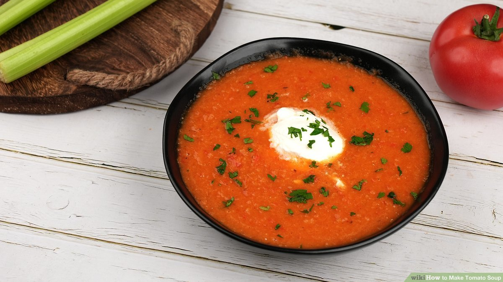

Tomato soup

Description
Tomato soup is a soup with tomatoes as the primary ingredient. It can be served hot or cold, and may be made in a variety of ways.
It may be smooth in texture, and there are also recipes that include chunks of tomato, cream, chicken or vegetable stock, vermicelli, chunks of other vegetables and meatballs.
Ingredients
- Butter
- Yellow onion
- Garlic
- Crushed tomatoes
- Chicken stock
- Basil
- Sugar
- Black pepper
- Whipping cream
- Parmesan cheese
Instructions
- Saute Aromatics – heat a non-reactive pot over medium heat. Melt in 4 Tbsp butter then sautee onions until softened and golden (10-12 min). Add minced garlic and saute another minute.
- Make the tomato soup base – stir in two 28 oz cans of crushed tomatoes with their juice, your chicken stock, chopped basil, sugar and black pepper. Bring to a boil then reduce heat, partially cover and simmer 10 minutes.
- Blend if desired – use an immersion blender in the pot or blend in batches using a blender (be careful not to overfill the blender with hot liquid) and return soup to the pot.
- Add cream and parmesan – stir in the heavy cream and shredded parmesan. Return to a simmer and season to taste if needed.
- Serve – ladle into warm bowls and garnish with more parmesan and basil.